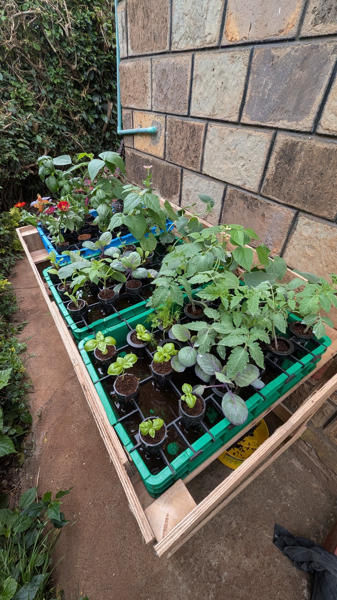
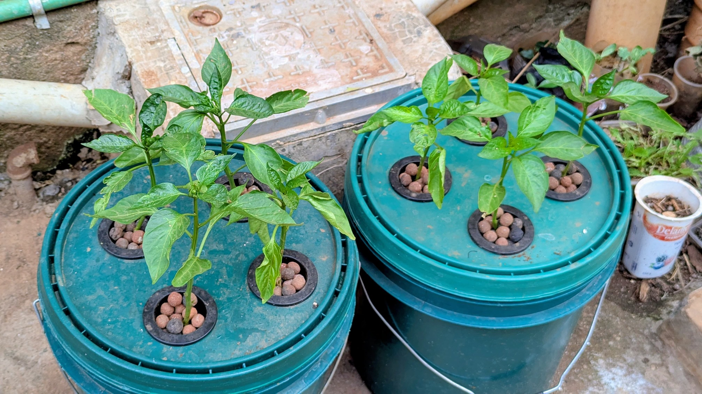

Model review and next-day prediction
- Day 1-2: stable pH and water level.
- Day 3-4: nutrient level slowly declined.
- Day 5: model predicts warning risk for tomorrow.
Notification: add nutrient solution today to prevent plant stress.
An IoT and Machine Learning-based system for monitoring hydroponic environments and detecting abnormal plant conditions in real time.


Notification: add nutrient solution today to prevent plant stress.
Sensor data is organized into an academic dashboard layout to demonstrate plant health, water availability, and nutrient balance.
AI summary: Conditions are stable. pH, water level, temperature, and nutrient values are within recommended hydroponic operating ranges.
Click start to simulate live readings. Values will fluctuate slightly, then stabilize after one minute.
The model learns from system readings and predicts the condition one day ahead, so the user can act early or confirm that the hydroponic environment is okay.
Click Detect Anomaly to read recent sensor data and predict tomorrow's plant condition.
Simple care tips will appear here after detection.
A simple table and bar-style trend chart show recent pH history, temperature trend, water level changes, and nutrient fluctuations.
| Time | pH | Temp | Water | EC | Status |
|---|
Review weekly averages, see what the model predicted, and get simple care steps for the coming week.
Fetching your sensor history and weekly predictions.
Loading next-week prediction...
What to do before next week will appear here.
Active alerts need your attention.
Checking for warnings and critical sensor alerts.
New here? A quick guided tour walks you through sensor collection, transmission, ML analysis, and alerts. It appears automatically on your first three sign-ins.
Step through the four parts of the Smart Hydro system anytime.
Ask the admin about sensor readings, alerts, or system setup. Replies show up here once an admin responds.
Track open questions and admin replies.